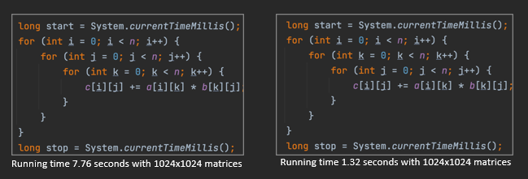

Experiments – Monitoring and Performance Engineering
Introduction
"Programming is an attempt to capture the uniformity of values and processes in actors."
— Robin Milner (1934–2010)
Brief Biography
Robin Milner was a British computer scientist renowned for his foundational contributions to programming language theory and formal methods. He developed the ML programming language, one of the earliest to feature type inference and functional programming constructs that influenced modern languages such as Haskell, OCaml, and F#. Milner also created the π-calculus, a formal model for describing concurrent systems, and made pioneering advances in theoretical computer science related to polymorphism and process calculi. He was a professor at the University of Edinburgh and a fellow of the Royal Society. In 1991, he received the Turing Award for “three distinct and complete achievements: LCF, ML, and CCS,” which laid the groundwork for much of modern programming language design and verification.
Performance Engineering
Performance engineering focuses on understanding and improving how programs execute. It is not only about making code work correctly, but also about ensuring it runs efficiently and scales well. This section explores experimental insights into performance monitoring, optimization, and computational efficiency.
Measuring Performance
Performance can be measured by analyzing execution time under different computational setups. Consider the case of multiplying two 1024×1024 matrices:

- Case A: Running time = 1.32 seconds
- Case B: Running time = 7.76 seconds
Matrix Multiply Slow Matrix Multiply Fast
The only difference between the two implementations is the loop order. This affects how memory is accessed, leading to variations in performance by a factor of up to six. Such behavior arises from data locality, a key concept in performance analysis.
Data that is accessed consecutively tends to remain in fast memory (cache), resulting in quicker computations. When data is scattered, cache performance degrades, leading to slower execution.
Cache Optimization
Cache memory provides rapid access to frequently used data. When a requested piece of data is already in cache, a cache hit occurs, which is fast. Otherwise, a cache miss forces the processor to retrieve data from slower main memory.
To optimize cache usage:
- Reorganize computations to reuse data already loaded into cache.
- Access memory in sequential order whenever possible.
- Choose data structures that map efficiently to cache lines.
Even small changes in loop nesting or traversal order can significantly improve performance without altering the algorithm itself.
Matrix Multiply Blocked (or Tiling)
This implementation demonstrates cache blocking (or tiling), which improves performance by maximizing cache reuse.
Algorithmic Optimization
Optimization is also achieved through algorithm design. For instance, matrix multiplication can be performed using algorithms with lower theoretical complexity:
- Strassen algorithm: (O(n^{2.807}))
- Coppersmith–Winograd algorithm: (O(n^{2.376}))
- Optimized CW-like algorithms: (O(n^{2.373}))
These methods, often called galactic algorithms, are mainly of theoretical interest since they are rarely used in practical systems. Nonetheless, they illustrate the boundaries of what is computationally possible.
Algoritmo de Strassen
Contexto
La multiplicación clásica de dos matrices A y B de tamaño n×n requiere:
O(n^3)
operaciones (exactamente n^3 multiplicaciones y n^3 − n^2 sumas).
Strassen demostró que no era necesario realizar tantas multiplicaciones y que se podía mejorar la complejidad algorítmica.
Idea básica del algoritmo
Para dos matrices 2×2:
A = [[a, b],
[c, d]]
B = [[e, f],
[g, h]]La multiplicación clásica necesita 8 multiplicaciones.
Strassen descubrió una forma de calcular el producto usando solo 7 multiplicaciones (y más sumas/restas):
M1 = (a + d) (e + h)
M2 = (c + d) e
M3 = a (f − h)
M4 = d (g − e)
M5 = (a + b) h
M6 = (c − a) (e + f)
M7 = (b − d) (g + h)Luego, el resultado C = A × B se obtiene como:
C11 = M1 + M4 − M5 + M7
C12 = M3 + M5
C21 = M2 + M4
C22 = M1 − M2 + M3 + M6Eficiencia
Si se aplica recursivamente a matrices grandes, dividiéndolas en submatrices, la complejidad pasa de:
O(n^3) → O(n^{log2(7)}) ≈ O(n^{2.81})Esto fue un avance enorme, porque por primera vez se demostró que la multiplicación de matrices podía hacerse en menos de tiempo cúbico.
Implicaciones prácticas
- Strassen es más rápido para matrices grandes, pero requiere más memoria.
- Introduce más operaciones de suma/resta, lo que puede aumentar los errores numéricos en cálculos con coma flotante.
- En la práctica, los algoritmos modernos (como Coppersmith–Winograd o algoritmos híbridos) solo aplican Strassen a partir de cierto tamaño de matriz.
Ejemplo numérico simple
Si multiplicas dos matrices 4×4, puedes dividirlas en 8 submatrices
2×2 y aplicar Strassen recursivamente. De este modo, se reducen multiplicaciones,
aunque aumentan las sumas.
Density and Sparsity
In many applications, data structures like matrices are mostly empty. Density measures the proportion of non-zero elements, while sparsity measures the proportion of zeros.
For example, a 6×6 matrix with 9 non-zero elements has:
Density = 9/36 = 25%, Sparsity = 75%.
Real-world matrices often have extremely low densities (e.g., 0.0003% or 2.31%). Managing such sparse data efficiently requires specialized compression techniques.
Example running times for 1024×1024 matrices:
| Density | Time (seconds) |
|---|---|
| 0.1% | 0.02 |
| 1% | 0.08 |
| 2% | 0.14 |
| 3% | 0.23 |
As density increases, the amount of computation and storage requirements grow proportionally.
Runing times test
Correction: The checksums are identical and the max error is 0 → both implementations compute the same result. 100%
Performance: With n = 512 and density = 0.25 (25%), it’s normal for the dense version (0.013 s) to outperform the sparse/CSR one (0.031 s): at such densities, the overhead of managing indices and irregular memory accesses usually outweighs the savings from skipping zeros; sparse computation is typically memory-bound and suffers from poor cache locality, whereas the dense version makes better use of the hardware.
The complexity of sparse operations scales with nnz (not with n²), but at 25% nnz is already large, so the benefit is diluted. In addition, B*B introduces fill-in (new non-zeros appear), so the product can be much less sparse than B and further worsen performance.
Rule of thumb
Sparse methods tend to win when the matrix is very sparse (≈10% or less, and often much less), and/or when n is large; otherwise, dense methods are usually faster.
What to test to “see” the crossover
- Lower the density (e.g., 1%, 2%, 5%) and increase the size (
n ≥ 2000). - Repeat several iterations to warm up the JVM and take the best/median time.
- Confirm you’re using CSR with primitive arrays (avoid autoboxing/objects).
- If you compare against a highly optimized dense implementation (BLAS/Vector API), expect it to win even at fairly low densities.
Conclusion
Your output makes sense; at 25% and n = 512, it’s expected that the dense version is about 2–3× faster than the sparse one.
Runing times test
java DenseVsCSRSquare 1024 0.01
java DenseVsCSRSquare 1024 0.001
Storage Formats for Sparse Data
In Performance Engineering, the way data is stored in memory has a major impact on computational efficiency.
This is especially true for sparse matrices, where most elements are zero and storing all entries would waste both memory and processing time.
Several specialized formats have been developed to store only the non-zero values and their positions efficiently.
The choice of format depends on the access pattern (by rows, by columns, or by diagonals) and on the type of operations to be performed.
Dense matrices are commonly stored as two-dimensional arrays, but sparse matrices require alternative formats to avoid wasting memory. Common representations include:
- COO (Coordinate Format)
- CRS (Compressed Row Storage)
- CCS (Compressed Column Storage)
- CDS (Compressed Diagonal Storage)
- JDS (Jagged Diagonal Storage)
Each format balances storage efficiency and computational performance differently. Choosing the right one depends on access patterns, density level, and the algorithm used.
Click on each format below to expand its description and example.
COO (Coordinate Format)
The Coordinate (COO) format stores each non-zero entry of a sparse matrix
as an explicit triplet (row, column, value).
Example: 4×4 matrix A
| 0 | 5 | 0 | 0 |
| 0 | 0 | 8 | 0 |
| 0 | 0 | 0 | 3 |
| 1 | 0 | 0 | 0 |
COO triplets (row, col, value)
| Row | Col | Value |
|---|---|---|
| 0 | 1 | 5 |
| 1 | 2 | 8 |
| 2 | 3 | 3 |
| 3 | 0 | 1 |
Advantages
- Very easy to construct and understand.
- Good for incremental matrix assembly.
Disadvantages
- Poor for arithmetic or repeated access (needs scanning all triplets).
- Usually converted to CSR/CCS for fast computations.
CRS (Compressed Row Storage)
The Compressed Row Storage (CRS) format, also known as Compressed Sparse Row (CSR), stores only the non-zero values of the matrix row by row, together with their column indices and row pointers.
Example: 4×4 matrix A
| 0 | 5 | 0 | 0 |
| 0 | 0 | 8 | 0 |
| 0 | 0 | 0 | 3 |
| 1 | 0 | 0 | 0 |
CRS Representation
The matrix is represented using three arrays:
values→ stores all non-zero elements row by rowcol_index→ stores the column index of each non-zero elementrow_ptr→ marks the starting index of each row in thevaluesarray
| Array | Content | Description |
|---|---|---|
values |
[5, 8, 3, 1] | Non-zero values in row order |
col_index |
[1, 2, 3, 0] | Column indices of each value |
row_ptr |
[0, 1, 2, 3, 4] | Start of each row in values |
How it works
Each pair (values[k], col_index[k]) gives the value and column position
of a non-zero element. The array row_ptr shows where each row begins in values.
Advantages
- Efficient for row-wise operations (e.g., matrix-vector multiplication).
- Compact memory usage for sparse matrices.
Disadvantages
- Column access is slower (requires full row scan).
- More complex to modify dynamically.
CCS (Compressed Column Storage)
The Compressed Column Storage (CCS) format, also known as Compressed Sparse Column (CSC), is the column-oriented version of CRS. It stores all non-zero values column by column, together with their row indices and column pointers.
Example: 4×4 matrix A
| 0 | 5 | 0 | 0 |
| 0 | 0 | 8 | 0 |
| 0 | 0 | 0 | 3 |
| 1 | 0 | 0 | 0 |
CCS Representation
The matrix is represented using three arrays:
values→ stores the non-zero elements column by columnrow_index→ stores the row index of each non-zero elementcol_ptr→ marks the starting index of each column in thevaluesarray
| Array | Content | Description |
|---|---|---|
values |
[1, 5, 8, 3] | Non-zero values in column order |
row_index |
[3, 0, 1, 2] | Row indices corresponding to each value |
col_ptr |
[0, 1, 2, 3, 4] | Start of each column in values |
How it works
Each pair (values[k], row_index[k]) represents a non-zero entry,
where col_ptr indicates the start of each column’s data.
This structure is especially efficient for operations that proceed column by column.
Advantages
- Efficient for column-wise operations and solving sparse linear systems.
- Compact and easy to convert from CRS (by transposing the matrix).
Disadvantages
- Row access is slower (requires scanning the whole column).
- Not ideal for dynamic updates or incremental builds.
CDS (Compressed Diagonal Storage)
The Compressed Diagonal Storage (CDS) format (also called
Diagonal or Banded storage) stores only the diagonals that contain
non-zero elements. Each diagonal is identified by its offset
k = col - row (main diagonal k = 0, upper diagonals k > 0, lower diagonals k < 0).
Example: 5×5 matrix A (non-zeros on k = -1, 0, 1)
| 1 | 4 | 0 | 0 | 0 |
| 2 | 5 | 7 | 0 | 0 |
| 0 | 3 | 6 | 8 | 0 |
| 0 | 0 | 9 | 7 | 1 |
| 0 | 0 | 0 | 2 | 4 |
Diagonal offsets
diag_offsets = [-1, 0, 1]
Compact diagonal data (per offset)
| k (offset) | Data (compact) | Length |
|---|---|---|
| -1 | [2, 3, 9, 2] | 4 |
| 0 | [1, 5, 6, 7, 4] | 5 |
| +1 | [4, 7, 8, 1] | 4 |
Padded (aligned by column index, optional)
| k | c=0 | c=1 | c=2 | c=3 | c=4 |
|---|---|---|---|---|---|
| -1 | 2 | 3 | 9 | 2 | |
| 0 | 1 | 5 | 6 | 7 | 4 |
| +1 | 4 | 7 | 8 | 1 |
How it works
- Only selected diagonals are stored, identified by
diag_offsets. - Each diagonal is saved as a compact vector (optionally padded to length
nfor alignment). - Multiplications and solves that access along diagonals benefit from locality and reduced storage.
Advantages
- Excellent for banded matrices with small bandwidth (e.g., tridiagonal, pentadiagonal).
- Very compact and cache-friendly for near-diagonal sparsity patterns.
- Simplifies specialized algorithms (Thomas algorithm, banded solvers).
Disadvantages
- Not suitable for general sparsity patterns (non-zeros far from diagonals).
- Number of stored diagonals must be known; adding arbitrary entries may require format changes.
- Conversions to/from CSR/CCS may be needed for generic sparse operations.
JDS (Jagged Diagonal Storage)
The Jagged Diagonal Storage (JDS) format is a variant of the diagonal approach that reorganizes the matrix rows according to the number of non-zero elements they contain. Rows with more non-zeros appear first, producing “jagged” diagonals of decreasing length.
The goal of JDS is to improve cache efficiency and enable vectorization in matrix-vector multiplications, especially on vector or SIMD architectures.
Example: 5×5 matrix A
| 0 | 5 | 0 | 0 | 0 |
| 1 | 0 | 8 | 0 | 0 |
| 2 | 0 | 0 | 3 | 0 |
| 0 | 0 | 0 | 0 | 4 |
| 7 | 0 | 0 | 0 | 0 |
Step 1: Count non-zeros per row
| Row | Non-zeros |
|---|---|
| 0 | 1 |
| 1 | 2 |
| 2 | 2 |
| 3 | 1 |
| 4 | 1 |
Step 2: Reorder rows (descending by non-zeros)
New row order → [1, 2, 0, 3, 4]
Step 3: Build jagged diagonals
| Diagonal | Values | Column Indices |
|---|---|---|
| 0 | [1, 2, 0, 0, 7] | [0, 0, 1, 3, 4] |
| 1 | [8, 3, 5, 4] | [2, 3, 1, 4] |
Additional arrays:
perm→ stores the row permutation [1, 2, 0, 3, 4]jd_ptr→ starting index of each jagged diagonal [0, 5, 9]col_index→ flattened list of all column indices [0,0,1,3,4,2,3,1,4]values→ flattened list of all non-zero values [1,2,0,0,7,8,3,5,4]
How it works
- Rows are sorted by decreasing number of non-zero elements.
- Each “diagonal” stores one element per row, resulting in irregular (jagged) lengths.
- Access is highly sequential, optimizing vector and GPU execution.
Advantages
- Optimized for vectorized matrix-vector multiplication.
- Improves cache usage due to data locality in flattened arrays.
- Good for hardware with SIMD or streaming access patterns.
Disadvantages
- More complex to build and interpret than CSR/COO.
- Less efficient for random access or element updates.
- Row order must be stored separately for reconstruction.